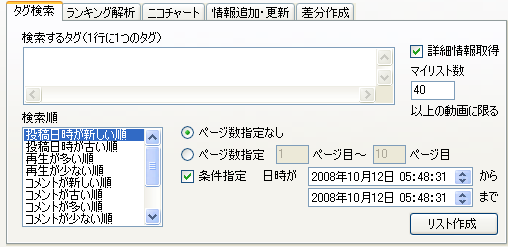
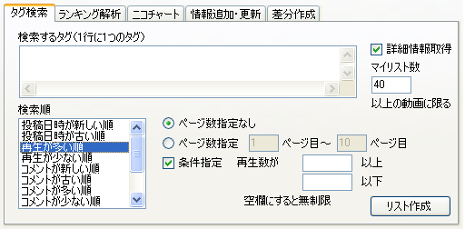

Ver 1.00 からタグ検索のインターフェイスが新しくなりました。

従来のタグ検索は「投稿日時が新しい順」での検索になります。
条件指定をしない場合は全期間での検索、した場合はその期間での検索になります。
ページ数指定と条件指定は同時に行えます。ページ数を指定した場合は、指定したページ内の条件を満たす動画を抽出します。
指定した期間の全動画を取得する場合は「ページ数指定なし」を選択してください（指定した期間より前になると自動的に検索が終了します）。

「再生が多い順」で検索する場合の条件指定は再生数での指定となります。
リストの追記機能は無くなりました。2つのランクファイルを手動でつなげてください。